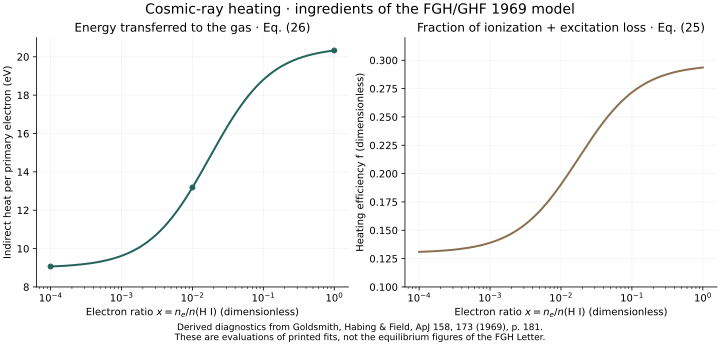
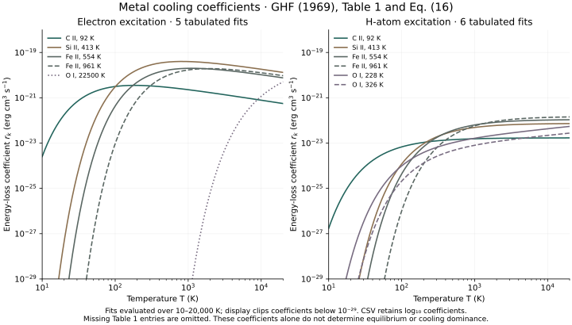

Chapter 02 / FGH & GHF 1969 / Model ingredients
Before the two-phase curve,
build the heating and cooling.
Field’s stability theory tells us when perturbations grow. The next question is what determines the equilibrium state of the gas. Here we begin with the historical heating expressions and metal cooling coefficients behind the 1969 two-phase model.
Scope: validated model ingredients. These new diagnostic plots evaluate published formulas; they are not reproductions of Figures 1 and 2 in the FGH Letter. The coupled equilibrium calculation is still in progress.
Two papers, one model
The Letter and its detailed companion.
Field, Goldsmith & Habing (FGH), ApJ 155, L149–L154, presents the equilibrium temperature, pressure, and electron-density curves. Goldsmith, Habing & Field (GHF), ApJ 158, 173–184, explicitly calls that Letter “Paper I” and describes the heating, cooling, and ionization calculation in more detail.
The companion paper supplies the equations and Table 1 used below. Keeping the two sources distinct matters: some printed depletion parameters differ between them.
How much ionization energy becomes heat?



eh = 9Q eV · f = 0.13Q
The electron fraction changes how energetic electrons share their energy with the gas. Equation (26) gives approximately 9, 13, and 20 eV at x = 10⁻⁴, 10⁻², and 1. The printed fit slightly exceeds 20 eV near x = 1; the code preserves the historical rounded expression.
Equation (23) separately gives Γion/(ζn0) = 1.4 × 10⁻¹¹Q erg. Here n0 is the total heavy-particle density, and ζ is the cosmic-ray ionization rate. Direct electron heating is another term, Γel = 4.6 × 10⁻¹⁰neζ erg cm⁻³ s⁻¹. It is not added to the plotted energy without specifying the particle populations.
Rounded coefficients in the paper are retained independently: the 0.13 in equation (25) is not forced to equal 1.4/11 from the prefactors of equations (23)–(24).
The historical metal cooling coefficients.



Λ2 = Σknk(nerek + nHrHk)
These r values have units of erg cm³ s⁻¹: they are energy-loss coefficients, rather than bare excitation probabilities. The relative total cooling contributions require target populations, collider densities, and elemental abundances. A large coefficient alone does not identify the dominant coolant.
Five electron fits and six H-atom fits are transcribed from the table. Missing entries remain unavailable. In particular, a blank for a collider is not treated as a measured zero.
An input discrepancy to resolve
Keep the printed depletion cases separate.
The FGH Figure 1 caption gives Fe depletion factors 4 and 10 for cases a and b. The detailed GHF paper, section IV on p. 180, lists remaining Fe fractions 0.3 and 0.01, corresponding to depletion factors approximately 3.33 and 100.
Both statements are recorded in the source audit, along with the other elements. The original equilibrium curves will require a deliberate choice and justification; the ingredient plots do not use either depletion case.
Reproduce the diagnostics
Inspect the inputs, then run the calculation.
Save the four files below together. They use the same pinned NumPy and Matplotlib versions as the Field exhibits. No source PDF or external data is required after installing dependencies.
python3 -m venv .venv
.venv/bin/python -m pip install -r requirements.txt
.venv/bin/python reproduce.py --output outputThe run checks the quoted heating values and limits, monotonicity and efficiency bounds, cooling slopes, missing-channel handling, and the C II collider-contribution ratio. All 11 checks passed. The validation report records measured errors, tolerances, runtime versions, source hashes, and scope limitations.
Next: the equilibrium figures
From individual rates to a coupled solution.
- Recover the historical H/He excitation and ionization fits, radiative recombination rates, and elemental abundances referenced by the detailed paper.
- Resolve the depletion choices and implement the coupled thermal, ionization, electron-density, and superthermal-electron balances.
- Recompute T(n), (n + ne)T, and ne(n), then compare with the FGH figures.
Passing the ingredient checks does not validate an equilibrium solver. No equilibrium curve is presented here as an original-figure reproduction.
Sources.
Field, Goldsmith & Habing (1969): the Letter ↗
Goldsmith, Habing & Field (1969): detailed calculation ↗
Field et al. (1968): earlier cooling data ↗
Code, explanatory text, and generated-data licenses remain unselected. Original paper rights are separate.